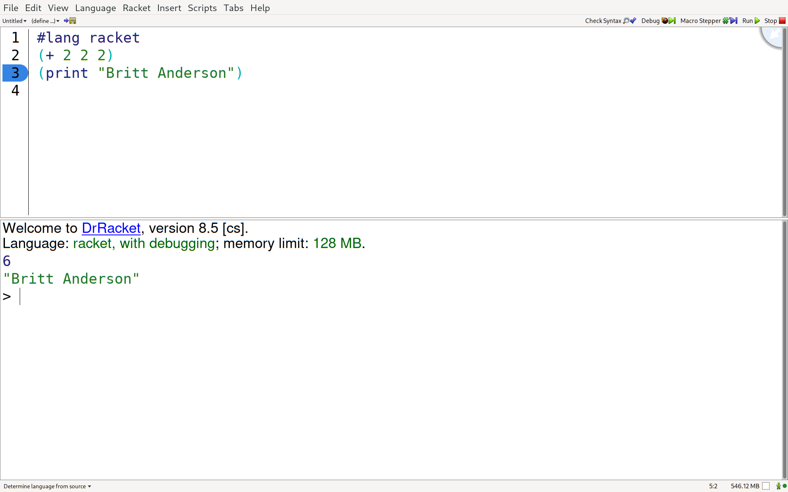

1 Introduction and Computing Requirements
1.1 Preface
Experimental psychology was invented as a counterweight to the physical sciences. It is the difference between a science of mass and of weight, luminance and brightness. A pound of feathers has the same mass as a pound of pennies, but clearly the latter weighs more. Just try it.
To make a science of such subjective experience as to whether one thing is heavier or brighter than another there needed to be methods for human experimentation that were scientific. That is, they combined a subject matter of subjective experience with the standard procedures of empirical sciences: repeat measurements, control conditions, and systematic variation. By convention Wilhelm Wundt is taken as Empirical Psychology’s founder and 1879, the year he established his independent experimental laboratory, as the date for the founding. It is only in the 1800s that we see the emergence of scientific experiments that look like modern psychology: Weber’s weights, Helmholtz’s mercury lamp flash experiments on attention, and Wundt’s own experiments on attention.
While Wundt was merging the experimental methods of physics and physiology with the content of human awareness, it was a generation before Wundt that Weber collected the data that led Gustav Fechner, a physicist, to express mathematically a procedure for measuring psychological magnitudes as functions of physical intensities: psychophysics (Robinson 2020).
Despite this early and potent demonstration of the power of using math for achieving insight into human subjective experience, quantitative models were not frequent in psychology for the next hundred years, and even now, despite notable and influential exceptions (the Rescorla-Wagner model, developed in the context of conditioning and the source of modern reinforcement learning, Rosenblatt’s perceptrons: the font from which neural networks flowed), mathematical models form only a small portion of published psychological research. While the contemporary content of scientific psychology has greatly expanded, the predominant use of quantitative methods in psychology is still statistical inference. That reliance on statistics may be both cause and consequence for why mathematics, such as calculus and linear algebra, are not curricular requirements for many psychology undergraduate programs though statistics courses are. We are much quicker to deploy complicated statistical methodologies than to use math as the language for expressing concretely, concisely, and unambiguously our psychological theories. Nor do we use computer programs based on psychological theories to explore model implications via simulations as much as we should.
This course is intended as a corrective. It endeavors to give undergraduates who may not have had any post-secondary math courses to speak of an exposure to some of the terminology and notation for the areas of mathematics most used in psychological and neuroscience models. The course combines this exposure with a heavy dose of programming exercises to practice concrete use. The goal is to build familiarity with terms and to desensitize some of the math and computing anxiety that formula and code excerpts can induce. In addition, and perhaps most importantly, the course wants to give students practice in seeing how formal mathematical ideas can be a potent source for focusing our discussion of what key psychological concepts are.
Of course, one cannot explore computational and mathematical ideas without having some familiarity with computing basics: writing code, markup syntax for reports and documentation, and ancillary tools such as git for sharing. In years past I combined all these content areas into this single course. The heterogeneity of student backgrounds made that tough, but as there were no alternatives it was necessary. Now, however, I have split off the computing tools part from this content part. Students can and should come to this course with some basic familiarity with using their computer as a research tool. If they do not have that knowledge they can gain it from a variety of on-line sources. I outline my approach here.
Freeing this course from the constraints of teaching computing basics provides the space for including new content and teaching the older material differently. I would like both novice programmers and those with more experience programming to be able to get something from the exercises. I have explicitly decided not to use more common programming languages, such as python, so that everyone can focus on what it is we are trying to do, and not just what library can we import or what code we can find online to cut and paste? With the freedom to select any computing language I had the chance to hearken back to the early days of artificial intelligence (AI); an era when AI was about thinking and reasoning and not about how to import a model pretrained on billions of examples. By choosing a LISP I can also engage in a discussion of how programming languages differ, and how the design choices and features of a programming language may influence the expression of our theoretical ideas. Can a particular programming language lead us to new ways of thinking and conceiving of the problem space we wish to explore theoretically and via simulation?
All that is grand, but the course is still intended for undergraduates, many of whom may only possess programming rudiments. How to get them all, the Mac Users (both Intel and M1/2), as well as Windows and *Nix users, to have a common environment so that I can teach the same thing to all and so that they can get the tools installed on their computers in less than a month? Common-Lisp (CL) would be ideal, and I wrote some of the code for an earlier offering in CL, but installing CL and getting a sane working environment can be challenging. Thus, I decided to try Racket. It is a language designed to support teaching, and has the DrRacket IDE. This works pretty much out of the box on Linux, Windows, and OSX systems. It even has a documentation system, scribble, built-in, and which I am using to write this document.
The remaining question is what new content to include? So far, I plan to expand the section on neuron modeling with an additional example, the Morris-Lecar model, that gives us a chance to explore how the differential equation formulation gives us additional information about our model via visualizing the phase space.
I also can now include something more traditional in the history of computational models of mind. We can code a simple Turing machine solving the busy beaver problem. We gain familiarity with this oft cited entity, and some concrete experience with the idea of computability and halting. How much more space is left for additional models? I hope to get to the Kohonen neural network for a week too. We will see from this fresh offering if there is time.
In summary, the goals for this course and this document are to give students a familiarity with the mathematical terminology and domains that form the backdrop to modeling in psychology. I still feel some basic understanding of what certain mathematical gadgets are is important, e.g. what a differential equation is is something psychologists modeling memory should know about, but that most of them do not. They do not, most of them, need to know how to analytically solve the equations, but they should be able to use their own programmed implementation to explore the implications of their ideas. The basic constructs of linear algebra, matrices and vectors, are also critical. It is essential for implementing many common neural networks, but vector spaces also comprise a theoretical account of representation. How much I can move beyond these fundamentals now that I am not also trying to combine it with an introduction to programming is a continuing experiment as we prepare to launch the Spring 2023 offering.
Preamble Bibliography
David K. Robinson. Gustav Theodor Fechner: Psychophysics and Natural Science. Oxford Research Encylopedia of Psychology, 2020. https://oxfordre.com/psychology/psychology/view/10.1093/acrefore/9780190236557.001.0001/acrefore-9780190236557-e-487 |
1.2 Preliminaries
1.2.1 Racket
For this course we will be writing our code in Racket. Racket is in the category of LISPs, and is a descendant of Scheme. These languages are in the tradition of good old fashioned AI (GOFAI). Their heritage is in symbolic computation, and connects programming with formal models of computation such as the λ calculus. Knowing an example of this language family is good for developing programming knowledge and helping to see the big picture. Programming is more than a particular language or syntax, it is a medium for expressing ideas. Learning more than one way to express oneself programmatically helps to abstract the message out of the medium. Racket offers the practical advantage that it comes with good support for all popular operating systems and most hardware. Racket incorporates a picture aware integrated development environment with syntax highlighting and has long been a staple of programming education with extensive tutorial material. At the same time Racket is a modern programming language in which one can write "production" code (though admittedly few do). It is touted as a programming language for writing programming languages, thus a student fully familiar with Racket can do more than most when it comes to coding. Though it is not the language of choice if one wants to get a job, it’s selection here emphasizes our perspective on trying to understand the nature of the methods more than how to scale them or optimize run-time efficiencies.
1.2.1.1 Getting Racket
Go to racket-lang.org and download and install the proper version for you operating system
Verify you can open Dr. Racket
Verify that Dr. Racket works by entering a simple instruction in the top window and seeing it executed in the bottom window

Figure 1: The Dr Racket IDE with a #lang line and some simple code
Submit your screen shot of your Dr Racket IDE with your name to the appropriate Dropbox on Learn.
1.2.2 Git
This book and the code it uses is in a git repository. Currently the git repository for this book is hosted on github. Make sure you have the racket-book branch selected. You are free to look at other branches, and you may find some interesting code or examples there from earlier offerings of the course, but the branch that we will be using for the Fall 2022 term is the racket-book branch.
Git is a program for version control, and is very useful. Github is one of a few different hosting hubs where many developers host their code to make it visible to others. You can fork and clone the code of others to try out their software or make your own changes to it.
I tried to explain all this once in a video. If you are already very confused it will not make things worse, and if you are only mildly confused it might help.
1.2.2.1 Getting Git
To make sure you have, and will be able to update, the code and material for this course you will need to clone this repository. If you wish to be able to make contributions to this course via a pull request you will first need to fork this repo. To that you should,
Get a program for using git on your operating system installed,
Clone (and possibly fork) this repository
Demonstrate that you are tracking the correct branch.
One way to do this is to run the git branch –verbose and git remote –verbose commands from the terminal, take a screenshot (on my linux system I use the terminal screen shot library scrot).
Submit the screenshot of the output to the Dropbox on Learn.
1.2.3 Scribble
Scribble is the Racket documentation tool. The course material is being written in it. It is quite powerful right out of the box without too much tweaking, but to get more advanced features functioning well you may have to do some searching and import a number of additional racket packages. It is a version of a markup language (markdown is another common markup language and jupyter notebooks are yet another version of the same idea).
The advantage of these tools is that they allow you to blend both code and text in a single document. You can explain what you are doing as text with links and images like you would in a document. You can also include code like you would in a program. The code can be both written out like a quotation or actually run with the results of the code actually input into a document. This allows the possibility of literate programming or reproducible research reports or what we are doing here: treating the code as another type of data (like our words and references and images and videos) that we use to express our ideas as clearly as we can. I find the babel system of org-mode to be the best of the bunch, but unfortunately it does not support Racket well.
Some of the course assignments will require you to submit a scribble document. You can start out writing a simple scribble document in the Dr Racket IDE and using the examples on the Racket language website. I have also included in this repository a template scribble file that includes a number of imports and has also been exported to html so that you can better understand what the scribble commands look like and what they are supposed to look like when you compile them (template file explained and compiled).